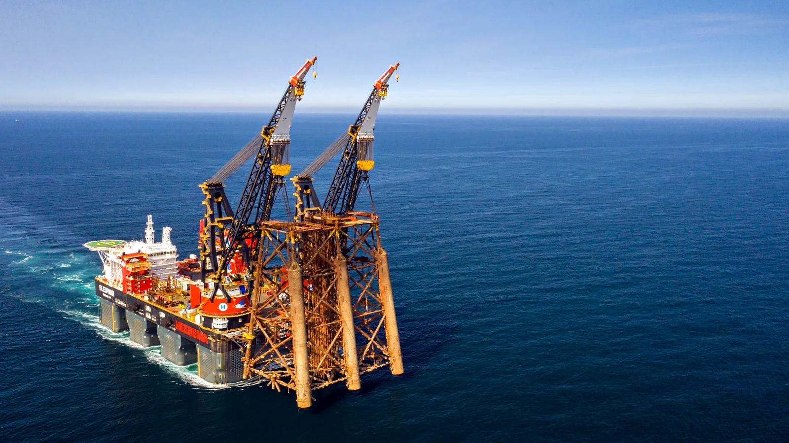
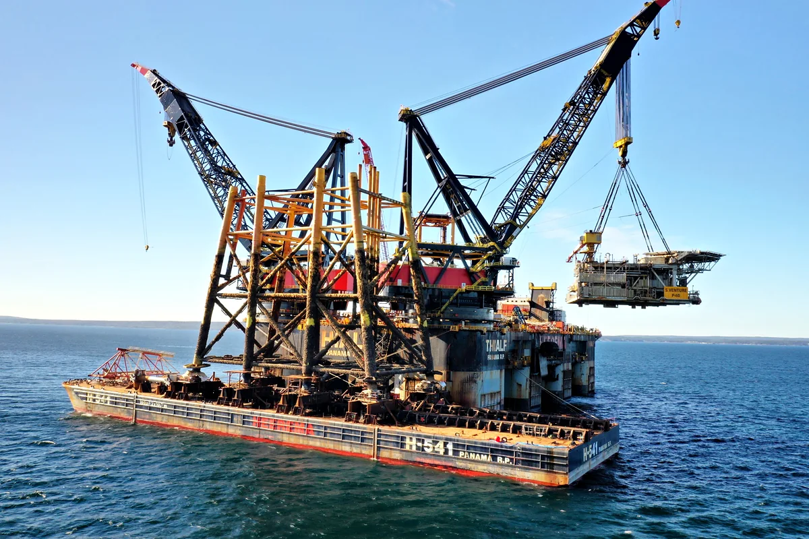
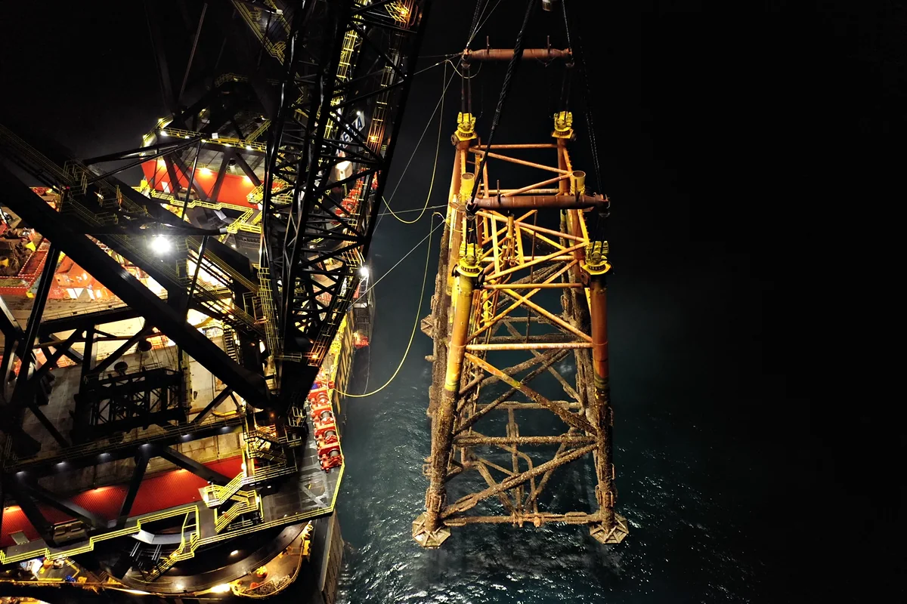
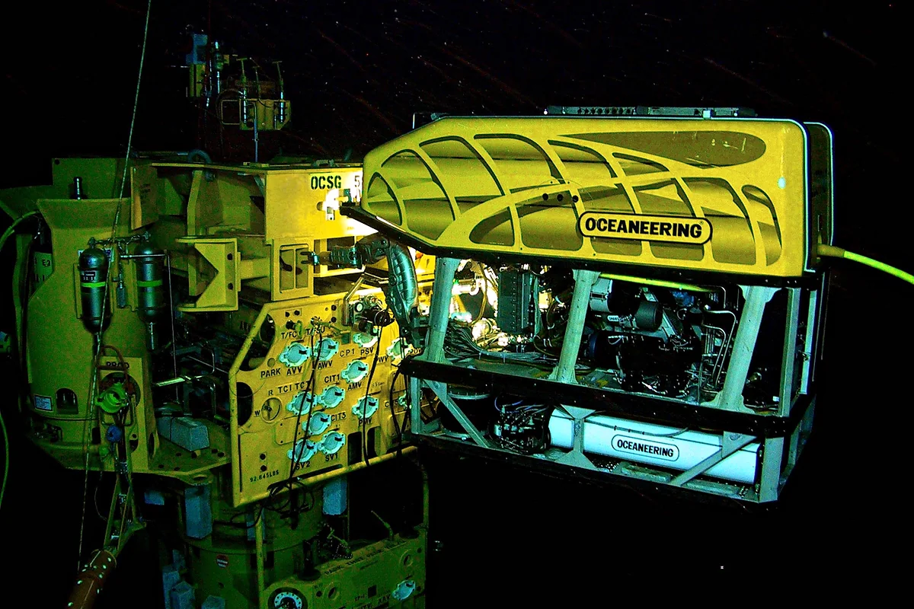
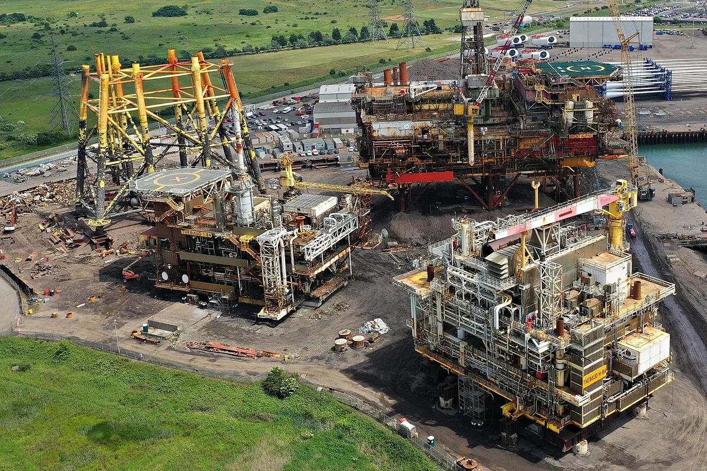
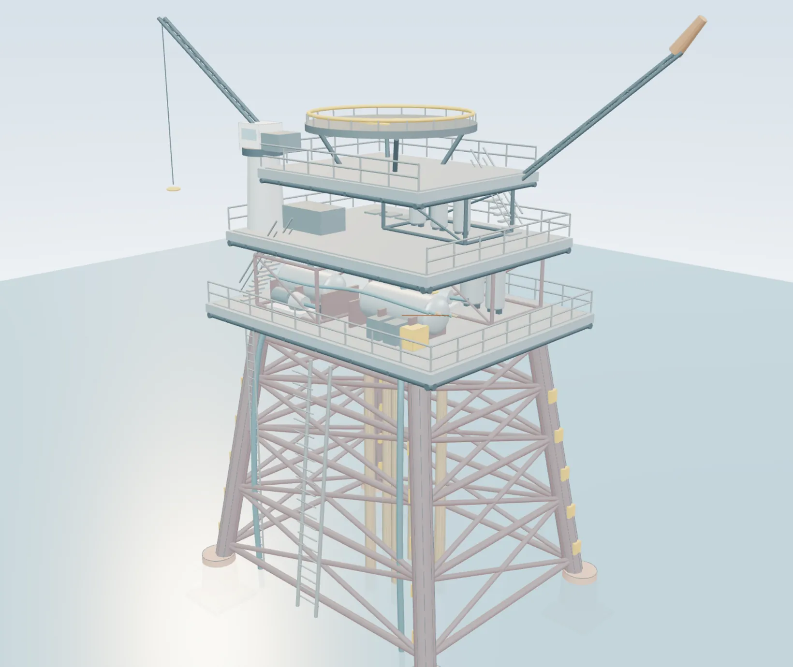

Independent decommissioning advisory
Engineering for the end of asset life
Independent decommissioning advice, from options assessment and cost planning through to execution support.
Fig. 01 Fixed platform in elevation, inside the Endura ring. Illustrative, not a specific asset.
The national picture
The scale of Australian offshore decommissioning
AUD 43.6 billion
Estimated cost to decommission existing offshore oil and gas infrastructure within the study’s Commonwealth-waters scope, 2025 to 2070, in real 2025 dollars. An indicative portfolio estimate that assumes full removal.
The national figure sets the context. The decision basis for each asset still has to be established from its records, assumptions and interfaces.
Endura works where that basis is set: in the study, the estimate basis and the removal method, while the scope can still change.
Read the Australian Decommissioning BriefServices
Specialist input at each stage of decommissioning
Engage Endura for a defined study, a specific engineering question or support across a wider programme. The scope, interfaces and required outputs are agreed at the outset.
- 01 Options and planning Comparative assessments, business cases and decommissioning plans that connect the asset boundary to the required end state. Decision criteria and options comparisonBusiness-case findings and recommendationsProgramme structure and close-out pathway
- 02 Engineering, cost and schedule Engineering development and review of the quantities, assumptions and dependencies behind a proposed scope. Removal concepts and constructability considerationsBasis-of-estimate inputs and quantity reviewSchedule logic and marine or disposal interfaces
- 03 Contracting and delivery support Contracting strategy and owner’s engineering support, with technical responsibilities and handovers made explicit. Work packages and contract-model considerationsInterface registers and tender strategyMethod review and client-representative support
- 04 Regulatory pathways and asset evidence Pathway mapping and documentation review aligned to the jurisdiction, asset and decision stage. Obligation and submission pathway mappingSource-register review and evidence trackingDocumentation gaps ranked by decision impact
What the work produces
The deliverable set follows the agreed engagement. Findings, source records, assumptions and unresolved items stay visible for the people taking the work forward.
- Study report
- Options, assessment findings, limitations and recommended next actions.
- Technical basis
- Scope boundaries, assumptions, methods and the interfaces affecting execution.
- Commercial inputs
- Cost and schedule basis, work packaging and technical tendering inputs.
- Action plan
- Priorities, responsibilities, dependencies and information still required.
Informed by execution
The method has to work beyond the study
Removal concepts depend on the temporary states, marine interfaces and receiving conditions as well as the final lift or cut. These constraints belong in the planning and cost basis.
Explore method development
From offshore recovery to onshore dismantling

01Topsides removalSingle lift or piece small concepts, lift points, rigging and the temporary states either side of the lift. 
02Jacket removal and transportCutting below the seabed, lift sequence, sea fastening and transport to the receiving yard. 
03Subsea infrastructure and pipelinesWhat is recovered, what can remain, and the cutting and recovery method for each item. 
04Onshore dismantling and recyclingLoad-in, dismantling sequence, waste segregation and receiving-facility requirements.
Photographs: Heerema Marine Contractors, used with permission (Sleipnir, 01, 02); Oceaneering (opens in a new tab), public domain (03); Able UK (opens in a new tab), CC BY-SA 4.0 (opens in a new tab) (04), both via Wikimedia Commons, cropped and colour-corrected. They show real work by others, not Endura projects.

Asset explorer
A model with a purpose
Rotate an offshore platform or an onshore plant and select an evidence domain. The explorer connects documentation gaps to the physical systems, decisions and next actions they affect.
- 9evidence domains
- 2asset views, offshore and onshore
Illustrative cutaway, not to scale. The scores are a synthetic demonstration, not an assessment of an actual asset.
Technical library
Engineering knowledge and references
- END-FN-01The evidence behind a defensible closure estimateCost basisRev B · 14 Sep 2026
- END-FN-02The temporary state can govern the liftTemporary statesRev B · 14 Sep 2026
- END-FN-03Inherited asset records: find the evidence that changes the decisionInherited evidenceRev B · 14 Sep 2026
- END-FN-04How to read a NOPSEMA record without overreading itRegulatory recordsRev B · 14 Sep 2026
- END-FN-05Closure decisions are often won or lost at the interfacesScope interfacesRev B · 14 Sep 2026
- END-FN-06Estimate drift: explain what changed before explaining the totalEstimate revisionsRev B · 14 Sep 2026
Offshore records · Edition 01
Ten official records, each with its published status
An independent, source-cited register of selected NOPSEMA decommissioning records. Each entry separates scope, assessment outcome and reported commencement, with a link to the original source.
- Records
- 10
- Plans accepted
- 8
- Under assessment
- 2
Accepted is an environment-plan outcome, not evidence that physical decommissioning is complete. Source review 18 September 2026. Selected records, not a national census or a list of Endura projects.
Browse the recordsWorking tools
Check the basis before you commit to it
These tools run in your browser. Answers and selections are not transmitted.
- 8questionsLiability self-checkAn indicative first pass at where inherited information may be limiting confidence.
- 12checksARO defensibility checklistReview whether an estimate can be traced from the asset record to the number.
- 5stepsDecision walkthroughFollow an illustrative decision from its initial question to the supporting brief.
- 9domainsAsset explorerSee where records influence scope, method and execution on an illustrative 3D model.
The practice
Independent advice with direct technical involvement
Endura brings execution experience into front-end planning and engineering review.
Led by Jed van Iersel, the consultancy supports operators and delivery teams where uncertain scope, inherited records or unresolved interfaces are preventing progress. Jed has worked offshore since 2003: deck, rigging and lift supervision, then offshore construction management, then decommissioning management, before founding Endura.
The role is independent and vendor-neutral. Options are tested against the client’s objectives and the physical, marine and disposal constraints of the asset.
- Trading name
- Endura Decommissioning
- Legal entity
- Van Iersel Projects Pty Ltd
- ACN
- 652 513 605
- Based in
- Doonan, Queensland
Separate platform offering
decomm.ai
Asset documentation intelligence for decommissioning.
Explore how inherited records and documentation gaps can inform the engineering basis. decomm.ai is presented separately from Endura’s consultancy services. The public demonstration uses illustrative data and does not calculate an accounting provision.
Discuss your project
Tell us about the asset, the scope and the timing
Start with the question your team needs to resolve and the information available.